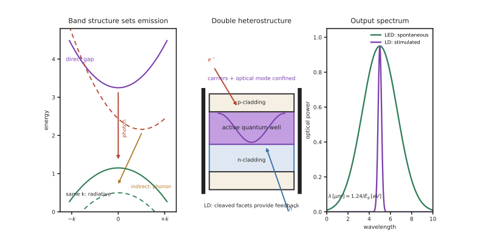

本页目录
光源 III · LED 与半导体激光
层次：本科核心 ｜ 🔗 直接接续微电子站第一、二页（能带、pn 结）。 从数量上说，半导体光源是最重要的光源——每部手机、每个数据中心、每盏现代灯具里都有。本页讲清它们的原理、效率来自哪里、以及为什么硅不能发光（这条限制塑造了整个硅光产业的技术路线）。
学习层：带隙先决定颜色，再决定器件路线
1. 具体谜题：为什么同一块半导体不能随便换颜色？
想做一个 1550 nm 通信光源和一个 450 nm 蓝光光源。用
先反推两者需要的带隙：一个约 \(0.80\) eV，一个约 \(2.76\) eV。再把硅的 \(E_g\approx1.12\) eV 代入，得到约 \(1.11\,\mu\mathrm m\)；这是否意味着硅能高效做可见 LED，还是还缺了一条动量守恒条件？
2. 先预测：LED、LD 与硅的分岔点在哪里？
先写下四项预测：① 直接带隙还是间接带隙更容易高效辐射复合；② GaN 折射率 \(n=2.4\) 时，芯片—空气临界角大约是 \(25^\circ\) 还是 \(60^\circ\)；③ LED 加端面反馈后会不会自动成为低阈值单纵模 LD；④ 把注入效率、内量子效率和取出效率都提高 10%，EQE 是增加 30 个百分点还是按乘法改变。实验先让你选材料和器件，再揭示能带、取出和阈值账本。
3. 最小 mental model：\(E(k)\) 图上的一次跃迁
把导带最低点和价带最高点画在动量 \(k\) 轴上。直接带隙中它们横向对齐，电子—空穴复合主要交给一个光子；间接带隙需要声子补动量，辐射通道稀薄。LED 主要依靠自发辐射，LD 还需要反转、波导和反馈；双异质结把载流子与光场同时关在有源区。
4. 正式机制：能量、效率与激光阈值
光子能量近似 \(E_\gamma=hc/\lambda\)，因此
高折射率材料的逃逸锥受 \(\theta_c=\arcsin(1/n)\) 限制。半导体 LD 在此之外还需模增益补偿内损耗和镜面损耗，可用
作最小阈值条件；DFB 的光栅、VCSEL 的垂直腔和 FP 解理面是不同的反馈实现。带隙给颜色，却不单独给出效率、线宽、温漂或可制造性。
5. 静态实验：从带隙换算到 EQE 折扣
无 JavaScript 时的静态读法：固定材料表可先这样读：
| 目标/材料 | \(E_g\) (eV) | \(\lambda\approx1.24/E_g\) | 结构结论 |
|---|---|---|---|
| InGaAsP 通信光源 | 0.80 | 1.55 μm | 直接带隙，适合 LD |
| InGaN 蓝光 | 2.75 | 0.451 μm | 直接带隙，适合蓝 LED/LD |
| Si | 1.12 | 1.107 μm | 间接带隙，辐射复合弱 |
若 \(\eta_{\rm inj}=0.90\)、\(\eta_{\rm IQE}=0.80\)、\(\eta_{\rm ext}=0.50\)，则 \(\eta_{\rm EQE}=0.36\)，不是 \(0.90+0.80+0.50\)。GaN 的 \(n=2.4\) 给 \(\theta_c=\arcsin(1/2.4)\approx24.6^\circ\)。脚本可切换材料、效率折扣、LED/FP/DFB/VCSEL 架构和温度，画出 \(E(k)\)、逃逸锥和归一化 \(P-I\) 阈值曲线；先猜直接/间接与是否起振，再显示。
6. 反例与边界：带隙公式不是器件性能表
- 间接带隙不等于绝对不发光。声子辅助、缺陷或应变工程可以产生辐射，但效率和带宽不能按直接带隙的简单图景估计；“硅不发光”是工程上的高效性判断。
- LED 变成 LD 不只加一面镜子。还要有足够反转、波导限制、低损耗反馈和热管理；没有阈值余量时只会看到自发辐射。
- EQE 的三项是乘法瓶颈。改善最小的一项常最有价值；大电流下俄歇复合、载流子泄漏和极化场还会造成 efficiency droop。
- 材料颜色不等于系统波长稳定。温度、应力、腔模、封装和直接调制啁啾都会改变输出；通信发射端还要权衡 DFB 线宽、VCSEL 阵列与 TEC 功耗。
7. 迁移题：为应用选择光源与集成路径
为 1550 nm 长距通信、450 nm 显示背光和手机 3D 点阵投射分别选材料与架构。请把带隙、反馈方式、温度控制、调制带宽和封装取出效率写成一张规格表，并说明为什么硅光平台常采用外接或异质集成 III-V，而不是等待硅本身变成高效激光器。

一、直接带隙与间接带隙：一条决定性的分界
电子从导带跃迁回价带时释放能量。能量以什么形式释放，取决于能带结构：
- 直接带隙（GaAs、InP、GaN）：导带最低点与价带最高点在 k 空间同一位置 → 跃迁只需释放光子（动量自动守恒）→ 辐射复合效率高，可以发光；
- 间接带隙（Si、Ge）：两者不在同一位置 → 跃迁必须同时涉及一个声子来守恒动量 → 三体过程概率极低 → 辐射复合效率极低，几乎不发光。
这就是"硅不发光"的根本原因（🔗 微电子站第十八页说过它是硅光最大的结构性障碍）。它不是工艺问题，是硅的能带结构决定的物理事实——因此硅光子学至今必须外接 III-V 激光器或做异质集成。
发光波长由带隙决定：
这是本页最实用的换算：要发 1550 nm（光通信窗口），需 \(E_g\approx0.8\) eV（InGaAsP）；要发蓝光 450 nm，需 \(E_g\approx2.75\) eV（InGaN）。
二、LED：效率的层层折扣
结构：正偏 pn 结（通常是双异质结），电子空穴在有源区复合发光。
外量子效率的分解（这个分解方式很有工程价值）：
取出效率是历史上的主要瓶颈：半导体折射率高（GaN 约 2.4），由全内反射（第一页）
只有很小的立体角内的光能逃出 → 大量光在芯片内被反复吸收。
对策（都是几何/结构手段）：表面粗化、图形化衬底（PSS）、倒装结构、封装用高折射率硅胶、光子晶体。
效率下降（efficiency droop）：InGaN LED 在大电流下 IQE 反而下降，机理（俄歇复合、载流子泄漏、极化场）至今仍有争论【争】。这限制了单颗 LED 的功率密度，是照明与 microLED 的实际约束。
白光的两条路线：
- 蓝光 LED + 黄色荧光粉（主流）：简单便宜，但显色指数受限（缺红光），且荧光粉转换有斯托克斯损失；
- RGB 三色混合：显色好、可调色，但成本高、需各色一致性控制。
蓝光 LED 的意义（诺奖工作）：没有高效蓝光就没有白光 LED——因为荧光粉需要蓝光激发。这是一个单点技术突破改变整个行业的典型案例，照明能耗因此大幅下降。
三、激光二极管
LED → LD 需要两样东西：粒子数反转 + 光学反馈（第六页）。
结构演进（每一步都是为了降低阈值电流）：
| 结构 | 关键改进 |
|---|---|
| 同质结 | 阈值极高，只能低温脉冲 |
| 双异质结（诺奖工作） | 同时限制载流子与光场 → 室温连续工作成为可能 |
| 量子阱（QW） | 态密度改变 → 阈值更低、温度特性更好 |
| 应变量子阱 | 改变价带结构，进一步降低阈值 |
| 量子点 | 理论上温度稳定性最佳 |
双异质结的巧妙之处：宽带隙包层同时做两件事——势垒限制载流子、低折射率形成波导限制光场。一个结构解决两个问题，这是半导体激光得以实用化的关键。
主要类型：
- FP（法布里-珀罗）：解理面做反射镜，简单便宜，多纵模；
- DFB（分布反馈）：腔内做布拉格光栅 → 单纵模、窄线宽，光通信发射端的标准器件（第十三页）；
- VCSEL（垂直腔面发射）：垂直出光。圆形光束、可晶圆级测试、易做阵列、阈值低、可高速调制——数据中心短距光互连与手机 3D 感测（点阵投射）的主力；
- 外腔与可调谐激光：窄线宽、宽调谐，用于相干通信与传感。
关键特性：
- 阈值电流 \(I_{th}\)：越低越好，直接决定功耗；
- 斜率效率：\(P\) 对 \(I\) 的斜率；
- 温度敏感性：\(I_{th}\) 随温度指数上升（特征温度 \(T_0\)）→ 多数系统需要 TEC 控温或温度补偿，这是光模块中一项实实在在的功耗与成本；
- 可直接调制：调制电流即调制光强（几十 GHz 级）。但直接调制会引起波长抖动（啁啾） → 长距高速系统改用外调制器（第十三、十五页）。
四、其他半导体光源
- SLD（超辐射二极管）：介于 LED 与 LD 之间，高亮度 + 低相干 → 正是 OCT 所需（第三页：低相干是资源）；
- 量子级联激光（QCL）：靠子带间跃迁而非带间跃迁，波长由量子阱厚度设计而非材料带隙决定 → 覆盖中远红外，用于气体检测；
- microLED：微米级 LED 阵列，自发光显示（第十六页）。巨量转移是其产业化的核心难题。
五、与微电子站的接续
这一页是两站咬合最紧的地方：
| 概念 | 微电子站 | 本站 |
|---|---|---|
| 能带与带隙 | 决定 MOSFET 的阈值与漏电 | 决定能否发光、发什么颜色 |
| pn 结 | 隔离与寄生 | 发光与探测的核心结构 |
| 直接/间接带隙 | 提到"硅不发光" | 展开其能带原因与后果 |
| 异质结与外延 | 应变硅、SiGe | 双异质结、量子阱是激光的基础 |
| 集成 | Chiplet、封装 | III-V 与硅的异质集成（第十五页） |
一句话：微电子用半导体控制电子，光电用半导体在电子与光子之间转换。 两者共享材料与工艺基础，目标不同。
六、要点
- 直接带隙才能高效发光；硅是间接带隙，这是硅光最根本的结构性障碍；
- \(\lambda \approx 1.24/E_g\) 是必备换算；
- LED 的取出效率受全内反射限制（临界角仅约 24°），靠结构手段改善；效率下降机理仍有争议；
- 蓝光 LED 是白光照明的使能技术——单点突破改变整个行业；
- 双异质结同时限制载流子与光场，是半导体激光实用化的关键；
- DFB 用于长距通信、VCSEL 用于短距与 3D 感测；
- 阈值电流随温度指数上升，控温是光模块的实际成本。
线二结束。下一线转向另一端：光如何被探测。这里会遇到本课最根本的物理极限——光子的散粒噪声。